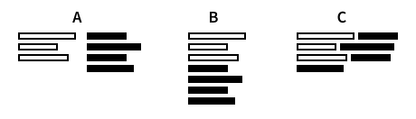

Version 1.5.0
dpScreenOCR is a free and open-source program to recognize text on the screen. Powered by Tesseract, it supports more than 100 languages and can split independent text blocks, such as columns.
The usual way to install dpScreenOCR on Unix-like systems is to use the package manager. If the program is not available in your package manager, the official website provides repositories for some systems, including Debian, Ubuntu, and derivatives. If yours is not one of them, consider the TAR.XZ archive or build the program from source.
You can download dpScreenOCR as a self-contained directory in a TAR.XZ archive. It has several advantages over the package manager version:
Doesn’t need to be installed: just unpack the TAR.XZ archive
anywhere and run dpscreenocr.
Works on most distributions, including legacy systems released around 2014 or later.
Provides the latest version of Tesseract, while in the package manager it may be out of date.
Has a language manager that allows you to install and remove languages without leaving dpScreenOCR.
To build dpScreenOCR manually, download the source code tarball, unpack it, and follow the instructions in “doc/building-unix.txt”.
The dpScreenOCR website provides an installer and a ZIP archive. The latter doesn’t need installation: unpack it anywhere and run dpscreenocr.exe.
Both versions are identical. In particular, the ZIP variant is not a so-called portable application: it stores its configuration and other files in the same directories as the installer version.
On Unix-like systems, the language installation process differs depending on whether dpScreenOCR was obtained from the package manager or as a TAR.XZ archive. Languages installed for the former will not be visible in the latter, and vice versa.
The TAR.XZ version of dpScreenOCR is shipped with the English language pack. To install other languages, use the language manager as described in the “Language manager” section.
If you installed dpScreenOCR using the package manager, you should also use the package manager to get the languages for Tesseract. Package names can vary from system to system, but they usually start with “tesseract” and end with a language code or name. For example, the package for German has the following names:
dpScreenOCR does not use the “osd” (automatic script and orientation detection) and “equ” (math and equation detection) packages.
dpScreenOCR for Windows is shipped with the English language pack. To install other languages, use the language manager as described in the “Language manager” section.
dpScreenOCR is easy to use:
After these steps, dpScreenOCR will recognize the text from the selected area and process it according to the selected actions.
If this option is enabled, dpScreenOCR tries to split independent text blocks, such as columns. Otherwise, the text is treated as one continuous block. This behavior is best illustrated by the following image, which shows a two-column text layout (A) recognized with (B) and without (C) the “Split text blocks” option:

dpScreenOCR always detects and separates paragraphs within text blocks, regardless of whether this option is enabled.
This is the list of languages that dpScreenOCR can use to recognize text. You can select more than one, but be aware that this may slow down recognition and reduce its accuracy.
The language manager allows you to install, update, and remove languages. On Unix-like systems it’s only available in the TAR.XZ version of dpScreenOCR, otherwise you can handle languages through the system package manager as described in the “Installing languages” section.
When you open the manager, it tries to retrieve the list of available languages from the Internet. If this fails (e.g., if there is no network connection), you can still remove languages using the corresponding tab.
The Actions group lets you choose what to do with the recognized text: copy it to the clipboard, add it to the history (located in the corresponding tab), or pass it as an argument to an executable.
The “Run executable” action runs an executable with the recognized text as the first argument. The text entry expects either an absolute path to the executable, or just its name if it is located in one of the directories listed in the PATH environment variable.
Running scripts on Unix-like systems doesn’t require any special
setup beyond the two standard requirements: make sure the script starts
with a proper shebang, and
that you have the execute permission (run
chmod +x your_script).
Here is an example Unix shell script that translates the recognized text to your native language using Translate Shell and displays the translation as a desktop notification.
#!/bin/sh
notify-send "Translation" "$(trans -b "$1")"dpScreenOCR doesn’t run batch files (“.bat” or “.cmd”) because there’s no way to safely pass arbitrary text to them. Please use another scripting language instead.
Before using a script, make sure that the file association is configured correctly so that you can run the script by its filename alone, without explicitly mentioning the interpreter. The easiest way to test this is to type the name of the script with some arguments in cmd.exe. If the script runs and receives all arguments, you can skip this section.
We will use Python as an example, but for other languages the process is similar. Open cmd.exe as an administrator and run asscoc with the script file extension as an argument:
> assoc .pyIf the association doesn’t exist, create a new one:
> assoc .py=Python.File
> ftype Python.File="C:\Windows\py.exe" "%L" %*If the association exists (assoc prints something like
.py=Python.File), run ftype to see what command is
used:
> ftype Python.File
Python.File="C:\Windows\py.exe" "%L" %*If the command doesn’t end with %*, fix it:
> ftype Python.File="C:\Windows\py.exe" "%L" %*If the script still receives only one argument (the script path),
this means that Windows actually uses a different association for the
given extension and ignores the one set with assoc/ftype. To fix this,
open regedit and make sure that the values of the following keys use the
correct path to the Python executable and end with %*:
HKEY_CLASSES_ROOT\Applications\python.exe\shell\open\command
HKEY_CLASSES_ROOT\py_auto_file\shell\open\commandA tip for Python users: note that in the examples above the association uses Python Launcher (py.exe) rather than a specific Python executable (python.exe). This allows using shebang lines to select the Python version for each script. For more information, see “Using Python on Windows”.
Most scripting language interpreters for Windows come with a special version of the executable that doesn’t show the console window. For example, this is pyw.exe for Python.
The interpreter installer usually adds a special file association that allows you to hide the console window by changing the script extension (for example, to “.pyw” for Python). If such an association does not exist, you can create it as described in the previous section.
The hotkey starts and ends the on-screen selection. The first time you press it, a selection rectangle appears on your screen. Move the mouse so that the rectangle covers an area with text, then press the hotkey again to send the selected area for recognition. To cancel the selection, press Escape.
The hotkey is global: it works even if the dpScreenOCR window is minimized. If pressing the hotkey has no effect, it probably means that another program is already using it. In this case, try another key combination.
If “Check for updates automatically” is enabled in the “Settings” tab, dpScreenOCR will check for new program versions at startup, but no more often than once a week. You can also check for updates manually using the “Check for updates” button in the “About” tab.
Since version 1.5, dpScreenOCR supports several command-line options.
Use -help to see them all.
This section describes what files dpScreenOCR stores on your system and where to find them.
Configuration files are located in the following directory:
Unix-like systems: $XDG_CONFIG_HOME/dpscreenocr if
the XDG_CONFIG_HOME environment variable is set,
~/.config/dpscreenocr otherwise.
Windows: %LOCALAPPDATA%\dpscreenocr
To quickly navigate to this folder, you can paste this path into
“Run” (press Windows + R) or into the folder address bar of File
Explorer. %LOCALAPPDATA% is an environment variable that
usually refers to
C:\Users\(your name)\AppData\Local\.
Configuration files include:
settings.cfg, where dpScreenOCR stores all its settings. You can edit this file as described in the “Tweaking” section to customize advanced options.
history.txt, which stores the contents of the “History” tab. Despite the “.txt” extension, it is strongly discouraged to modify this file as it has a strict structure that can be easily broken.
Data files are located in the following directory:
Unix-like systems: $XDG_DATA_HOME/dpscreenocr if the
XDG_DATA_HOME environment variable is set,
~/.local/share/dpscreenocr otherwise.
Windows: the same directory as for the configuration files.
Data files include the languages installed via the language manager. For Tesseract, they are located in the “tesseract_N_data” subdirectory, where N is the Tesseract version number. You can add your own “.traineddata” files here (e.g., downloaded from the Languages page, tessdata_best, or elsewhere on the Internet).
“.sha256” files contain SHA-256 checksums of the corresponding
“.traineddata” files, in the same format as generated by the sha256sum
utility with the --binary flag. dpScreenOCR uses them to
check if a language file is out of date. You don’t have to create them
manually when adding your “.traineddata” files.
This section describes how to change some settings that are not available in the dpScreenOCR interface.
The settings are stored in the settings.cfg file located in the configuration files directory (see the “Program files” section for where to find it). dpScreenOCR overwrites the settings on exit, so be sure to close the program before editing this file.
Each line in settings.cfg contains an option as a key-value pair. A
value is a string that, depending on the option, represents a boolean
(true or false), number (like 10
or -5), file path, etc. Values can contain the following
escape sequences:
\n - line feed\r - carriage return\t - tabulationAny other character preceded by \ is kept as is. To
preserve leading spaces, escape the first one with \; to
preserve trailing spaces, put \ at the end of the line.
To reset an option to its default value, remove it from settings.cfg; to reset all options, clear or delete the file.
Here is a list of options that can only be changed by editing the settings file:
action_copy_to_clipboard_text_separator
(\n\n\n by default) the separator to insert between
recognized texts when the “Copy text to clipboard” action gets several
of them at once. This option is only effective if
ocr_allow_queuing is enabled.
history_wrap_words (true by default)
whether to break long lines of text in the history so you don’t have to
scroll horizontally.
hotkey_cancel_selection (Escape by
default) the hotkey to cancel selection.
ocr_allow_queuing (true by default)
allows you to queue a new selection for recognition without waiting for
the previous one to complete.
If this option is disabled, pressing the hotkey will have no effect
until the recognition is finished. If this option is enabled, the “Copy
text to clipboard” action can get several recognized texts at once, in
which case they will be joined using
action_copy_to_clipboard_text_separator as a
separator.
selection_border_width (3 by default)
the width of the selection border.
Depending on the platform, this width can be scaled proportionally to DPI, which can be the physical DPI of the display, the virtual DPI set by global interface/font scale settings, or a combination of both.
ui_window_minimize_on_start (false by
default) whether to minimize the window on program startup.
In dpScreenOCR versions prior to 1.5, this option was useful in
combination with ui_window_minimize_to_tray when adding the
program to the autostart. Now that the program has the “Run at system
logon” setting and the -hide command-line option,
ui_window_minimize_on_start is only kept for backward
compatibility.
update_check_auto_interval_days (7 by
default) the interval, in days, between the automatic update
checks.
This section contains a list of common issues and their solutions. If the solution doesn’t help, or you have a problem that is not listed here, please report it on the issue tracker. You can also contact the author by email using the link at the bottom of the dpScreenOCR website.
Recognized text contains garbage
Make sure that you use the minimal set of languages needed to recognize the text. Don’t enable languages just in case: this will dramatically reduce the accuracy of recognition.
Pressing the hotkey has no effect
This hotkey is probably used by another program. Try to choose another key combination.
“Run executable” has no effect
Make sure that the “Run executable” text entry contains either an absolute path to the executable, or just the name of the executable that is located in one of the directories listed in the PATH environment variable.
(Unix) Make sure you have the execute permission. Run
chmod +x executable.
(Unix) If your executable is a script, make sure it starts with a proper shebang.
(Windows) Are you trying to use a batch file (“.bat” or “.cmd”)? This is not allowed because there is no way to safely pass arbitrary text to them. Please use another scripting language instead.
(Unix) “Wayland is not supported. Please switch to the X11/Xorg session”
You need to switch to the X11/Xorg session, as dpScreenOCR doesn’t work with Wayland yet. In most desktop environments, you can do this from a dedicated menu (sometimes hidden under a gear button) when the login screen asks for the password.
(Unix) No languages
Make sure that the TESSDATA_PREFIX environment variable is either not set or points to a directory with “.traineddata” files.
(Windows) “Run executable” opens the script in a text editor
Create a file association as described in “Creating file associations”.
(Windows) “Run executable” runs the script without an argument
Make sure that the file association ends with %*. See
“Creating file associations”
for details.